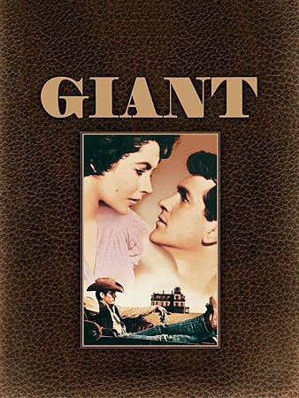

美國 - 巨人 Giant
《巨人》（Giant)是1956年好萊塢根據小說改編的電影，由喬治史蒂文斯執導，洛赫遜飾演德州某牧場主人畢克，伊莉沙白泰勒飾演其妻李斯莉，詹姆斯狄恩飾演鄰家小伙子傑特。改編自埃德納·菲伯的1952年小說。贏得奧斯卡最佳導演獎，以及獲得最佳影片、改編劇本等9項提名。2005年被美國國家電影保護局典藏。傑特從畢克姐姐遺產中獲贈一小塊地，其後那塊土地竟然「產石油」，因而暴富。同時期，畢克與李斯莉的子女也逐漸成長，但「心不在牧場」，畢克雖然因牧場也出石油而越富有，然而，從年輕時就一派斯文（斯文的另一面就是讓人感覺溫吞）的畢克只想過日常生活，沒有什麼宏圖大志（與其兒子、女兒想往外發展的想法差異極大）。
某日，畢克帶全家到某餐廳用餐，但餐廳負責人表示不「招待」其「墨西哥裔的媳婦」與「美墨混血的孫子」，結果與畢克大打出手，從誠俊所傳短片內容，可見打鬥之激烈，並且，老畢克在努力奮戰後倒地。然而，李斯莉及其他家人，因此才發現畢克是一位真正的巨人！
巨人這部電影，你從頭到尾，原本不曉得巨人在那裡，直到畢克在與那位因種族歧視不願接待其媳婦與孫女的餐廳負責人互毆，畢克雖然屢遭對方重拳打擊，但畢克始終不屈，奮戰到底，終於讓其家人瞭解，平素溫文儒雅的畢克，實際上在必要時是位崢崢硬漢。
相關網站
評分： ⭐️⭐️⭐️⭐️💥 9.2分影評
- 痞客邦： 《巨人》1956--劃時代的故事令人回味無窮!
- 開眼電影網： 巨人 Giant
- 痞客邦： 巨人 Giant
- U2電影館： 洛赫遜介紹
